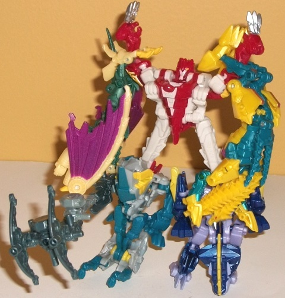
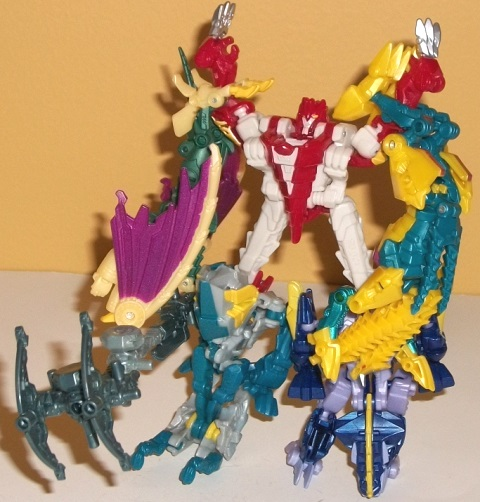

Difficulty of Transformation : Medium
Rating : 2.7
Hun-grr, Hun-Gurrr, Hun-grrr...
they're all rather interchangable and are the same bad pun, so apologies
in advance if I mis-spell his name in this review. Anyways, Hun-Gurrr is
an update of the G1 Terrorcon leader of the same name (plus or minus a
letter or two). Like the original, this version is a wingless, two-headed
dragon-- not much had to be changed about his beast mode for him to fit
in with the rest of the Prime Predacons, though his body in G1 was much
larger proportionally and he has little arms as opposed to four legs this
time to make him look a bit more unique from
Twinstrike
.
Hun-Gurrr's proportions are a bit different this time around, with the
body taking up less real estate, but he still looks great, like a dragon
T-rex. I really don't have any problems with Hun-Gurrr's proportions at
all this time around, though I do wish his legs didn't stick out quite
so far from the side of the body. There are technically robot mode extras
in this mode, but they're both very minor-- namely they're the little clips
on the underside of his heads that are used for Abominus, and the robot
hands are somewhat visible as they're used for his heels. Hun-Gurrr's mold
detailing is very much like most other Prime Predacons', in that it looks
like a mixture of reptilian and armor-like detailing, with many overlapping
panels. This is particularly prevalent on the two dragon necks and on the
back (or chest of the robot mode), the latter of which has a really interesting,
well-detailed design that looks like a combination of bone and armor. And
bone is definitely what Hasbro was going for-- other than a glittery shade
of dark red, this toy's main color is a bone white, which works particuarly
well on Hun-Gurrr's necks. Both colors complement each other quite well,
and on places where there isn't much bone white--like the legs-- the accent
colors of silver (for his claws) and yellow (for his upper legs) serve
to break up all that red as well. For articulation in this mode, Hun-Gurrr
can move at the top and bottom of each neck piece, at the shoulders (as
one point-- both arms are part of the same plastic piece), at the hips
(at two points), and slightly at the ankles-- pretty good for a Legion
class toy. Hun-Gurrr comes with the chainsaw-gun that comes with many other
Beast Hunters legion toys, his done up in a rather nice bluish gunmetal
gray shade that contrasts against his otherwise "warm" color scheme. For
storage in this mode, the weapon can be pegged into the side of either
of the dragon legs.
In robot mode, Hun-Gurrr
basically stands up on his two dragon heads while his dragon legs rotate
out to become arms and the tail rotates back to reveal his robot head.
The negative of this is that almost nothing is revealed in this mode that
wasn't in dragon mode-- just the robot head, which is a great updated version
of his G1 noggin, with a silver visor that's rather un-like most Prime
Predacons' heads. His proportions are still pretty good in this mode, with
nice, wide shoulders and a stocky look. His legs could stand to have molded-in
knee detailing even if he can't move there, but otherwise they look quite
good as well. There are a few dragon extras, though-- in particular the
arms that hang behind his lower back and the dragon feet that are on the
backside of his hands. I don't mind the dragon arms-- they stay out of
the way pretty well and don't get in the way of articulation. The feet,
on the other hand, don't blend in much with the shape of Hun-Gurrr's lower
arms, and stick out a bit above his elbows, thus being a tad unsightly.
For articulation in this mode, Hun-Gurrr can move at the shoulders (at
two points), hips, and ankles-- a bit more restricted than his dragon mode,
surprisingly, but still on-par for your typical Legion class figure. I
do wish he had some sort of elbow articulation, though, as his lower arms
are always pointing inwards a little bit.
Hun-Gurrr becomes the
main body and upper legs of Abominus.
Hun-Gurrr looks great
in both modes, with nice proportions, few kibble issues, nice articulation
for the size, and great mold detailing with a decent color scheme. His
main weakness is that his two modes are rather similar, with not quite
enough "revealed" in either mode from his transformation, but I still think
he's an excellent toy for the size class, and my favorite mold out of the
Legion "Terrorcon" Predacons by a hair.
 Abominus
(Combined Form of Blight, Hun-Gurrr, Rippersnapper, Twinstrike, & Windrazor)
Abominus
(Combined Form of Blight, Hun-Gurrr, Rippersnapper, Twinstrike, & Windrazor)

Difficulty of Transformation
: Medium
Rating
: 2.7
Oddly enough, the only
combiner in the entire Prime line doesn't advertise its existence on any
of his components' packages; the only directions you actually get for making
this guy come with the Target Exclusive "translucent deco" giftset version
of this group. Composed of the five Legion class Predacons Hun-Gurrr, Twinstrike,
Windrazor
,
Rippersnapper
,
and
Blight
, Abominus here is a homage to the
G1 Terrorcons, who could also combine with Hun-Gurrr forming the main body.
Upon seeing the end result of combining all five Terrorcons, though, I...
can see why they left it off the packaging. Simply speaking, Abominus fits
his name in all the wrong ways. The main body/Hun-Gurrr is the only part
that actually looks a bit like it's part of a gestalt; otherwise this very
much looks like a fan crammed five Legion toys together. Hun-Gurr has a
nice alternate, larger gestalt head, and his dragon tail and claws make
for a nice chest. It's also quite impressive how all five Terrorcons' weapons
can combine together into a larger, long hammer for Abominus to wield.
The connections between the different 'Cons-- for the size-- are fairly
stable, being composed of a combination of clips and/or pegs. That, unfortunately,
is all I have to say that is nice about this mode. The upper legs provided
by Hun-Gurrr are too long and awkwardly skinny, and the shoulders don't
peg or lock into place at all, with Hun-Gurr's dragon claws and robot hands
sticking out quite blatantly out above where Abominus' shoulders should
stop. Twinstrike and Windrazor are literally just their beast modes with
the rear legs pegged into the shoulders of Abominus-- they don't look even
remotely like arms. Their beast heads can hold Cyberverse-compatible weapons
and are thus the "hands", but they just look ridiculous and are too long
for arms. Blight and Rippersnapper at least have slightly unique transformations
for their leg modes, even if they're ever-so-slight variations on their
robot modes with the backs facing forward and Hun-Gurr's two dragon heads
plugged into their main bodies. However, neither Rippersnapper nor Blight
have anything to peg their individual appendages together to make the legs
more solid, and they still look like a mess, just a slightly more solid-looking
(but certainly not solid-
feeling
) mess. As for articulation, Abominus
can move at the shoulders at two points and at the hips. You can fiddle
with his individual components to fine-tune his pose, but that's all the
major articulation you're getting out of Abominus.
Abominus is just...
awful. Easily the worst combiner I've seen in my (as of this writing) 19
years of collecting. Hun-Gurr's gestalt portion is the only one that doesn't
feel like a complete afterthought at best, and even then it's still pretty
weak. My advice? Don't buy ANY of the five Terrorcon-Predacons with the
intention to combine them into Abominus-- it's not worth it at all, and
is just best forgotten about. Buy them for their individual modes.
Reviews by Beastbot